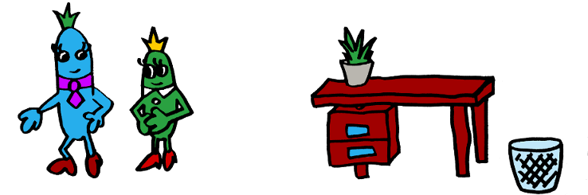

ОБУЧЕНИЕ НА РАБОТНОТО МЯСТО
Шадоуинг (шадоуване)
Шедоуинг идва от английската дума за сянка shadow. Тази бизнес обучителна практика не изисква големи разходи тъй като обучаващият не прекъсва работата си, а не се налага наемане на треньор или организиране на групи.
Този метод е особено полезен в сферата на услугите (ресторантьорство, администрация) и занаятчийството (дърводелци, електричари, бижутери), защото там задачите изискват определен усет и опит, който трудно се преподава в зала.
Какво е?
Все пак какво точно представлява шадоуването? Това е метод на обучение, при който служител, който е нает скоро или е бил в друг отдел, придружава по- старши служител в хода на един нормален ден и наблюдава как се извършва работата, а е възможно и да се пробва да работи над някои по- прости задачи под надзора на обучаващия и с тяхни подкрепа и насоки. Ако позволите на новака не само да гледа демонстрацията, но и да пробва новите умения в контролирана среда, това се отразява добре за самочувствието на обучавания; така се придобива практичен опит.
Обикновено шадоуинга продължава няколко дни или седмици, като часовете прекарани с експерта се редуват с по- формални типове обучения. Нужно е шадоуинга да се извършва в съчетание с други уроци, защото той не е заместител за знанията и демонстрациите, които може да са включени в други обучителни дейности.
Ако имате възможност, позволете на новия служител да се прикрепи към няколко души, за да види различни стилове на работа, както и да предотвратите шанса да възприеме някои странности и лоши практики от някой от служителите. Всеки понякога нагажда практиката си според собствените си предпочитание и особености, които понякога биха били във вреда за някой с друг начин на работа и без толкова опит.
Този подход може да се използва като първа стъпка за привличане на квалифициран персонал. Може да бъде предоставен такъв стаж в партньорство с професионално или техническо училище, от което бихте набирали служители в бъдеще. Така те биха се ориентирали дали конкретната позиция би им допаднала, а ако не- какви са опциите.
Ако участвате в шадоуинг...
Някои съвети за експерта са да поощрява въпроси, защото може на обучаващия се да му е неудобно да го прекъсва или да е нервен, също така се изисква търпение, но основното е да се опита да изпълнява задачата възможно най- нормално. При избора на обучител трябва да вземете предвид не само компетентността, но и темперамента- не всички професионалисти стават за преподаватели.
Ако пък сте от другата страна като обучаващ се, опитайте се да слушате с повишено внимание и ако трябва си водете записки и гледайте да не разсейвате наставника си във важни моменти. Обръщайте внимание не само на конкретната задача, но и на методите за комуникация, както и какви инструменти и техники се ползват. Това обучение ви предоставя възможност също да се запознаете с хората, с които ще общувате ежедневно- научете ролите, които изпълняват, разпитайте ги какво им харесва в компанията и, защо не, се сприятелете. Никога не е зле да имаш още едно приятелско лице насреща.
След обучението е добре да се направи оценка на успешността му. Питайте курсиста доколко успешно е според тях, какво ново са научили и какви са били добрите и лошите страни. Така следващият път всичко ще мине по- гладко.